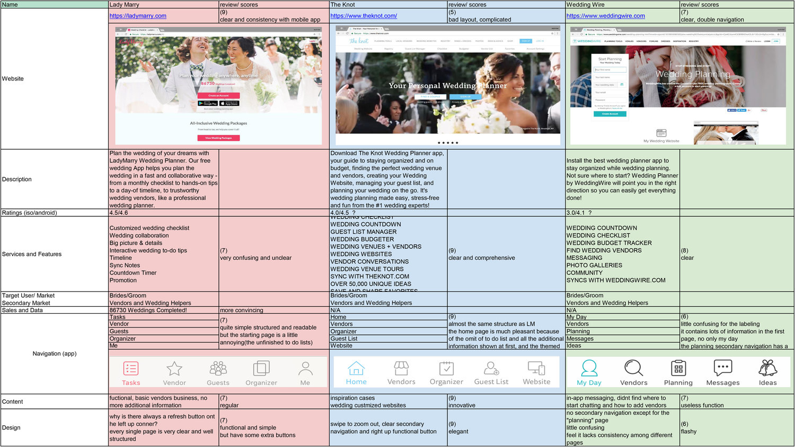
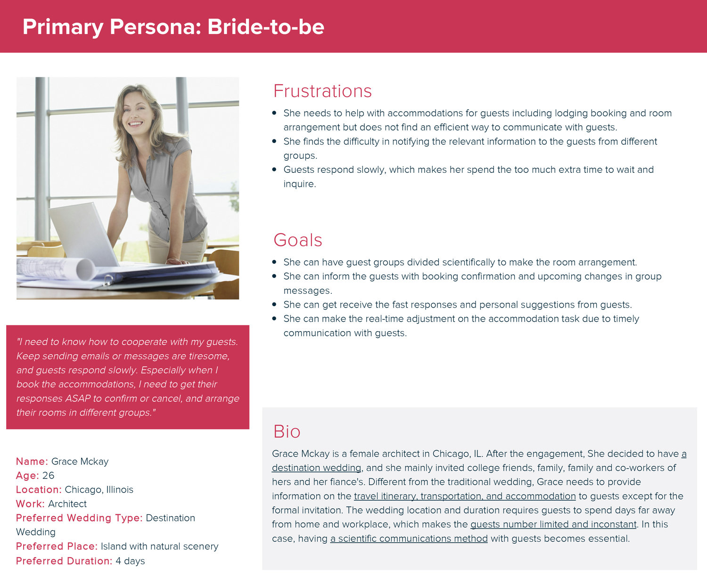
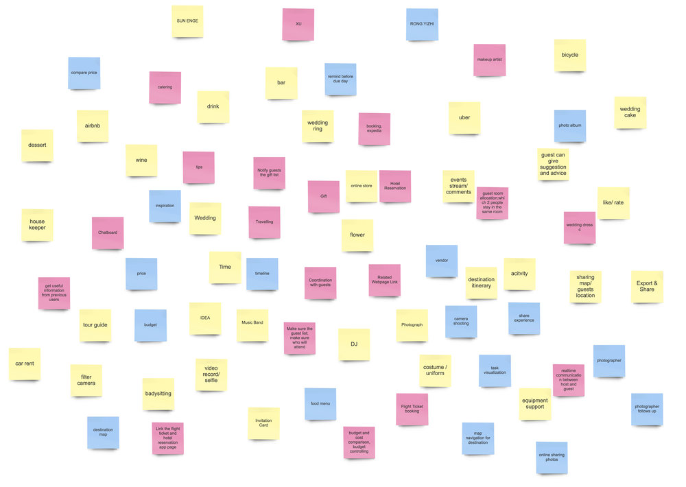
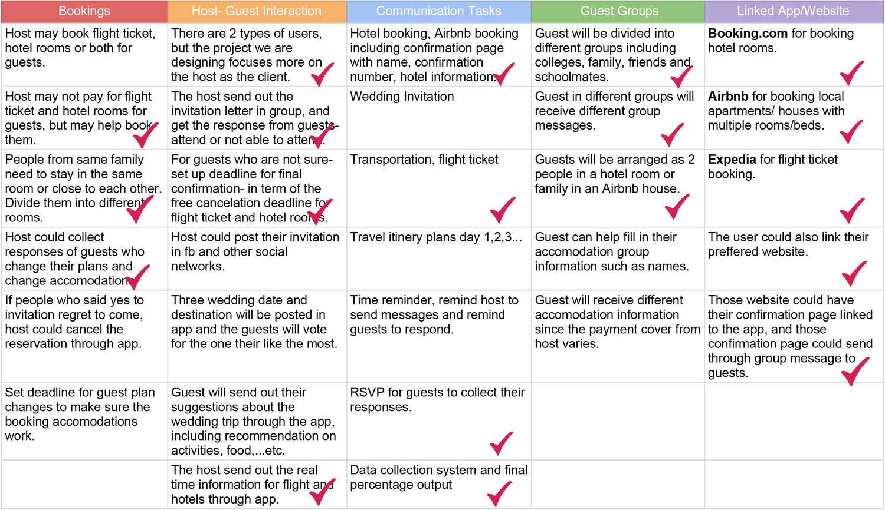
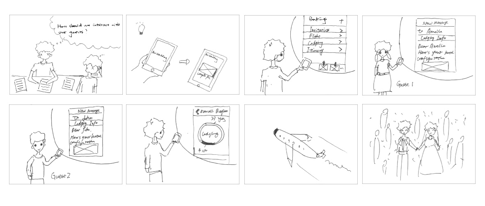
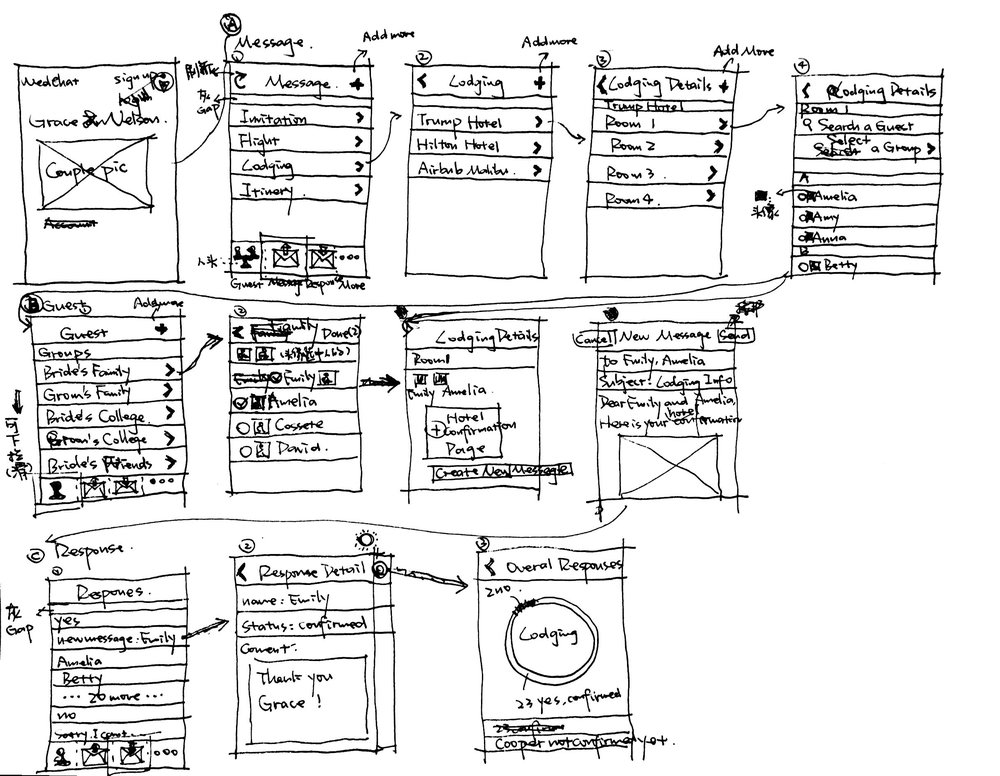
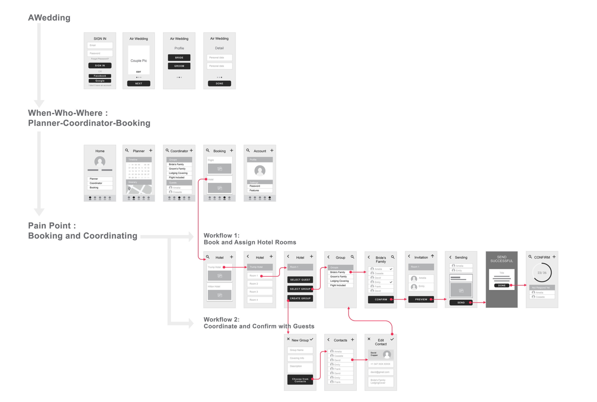

PROBLEM DEFINITION
Wedding Planning is currently a general pre-marriage activity among new couples and especially an essential process before a destination wedding. It requires the detailed management of the different segments not only the big day but also during the whole traveling experience. However, lack of experience makes difficulty even on starting to plan. New couples also have problems on delivering real-time information to guests, arrange bookings on flights and accommodations, balancing the cost within the budget, and cannot control their time frame to maintain the planning progress.
SOLUTION
AWedding served as a mobile application, is a group coordination and cooperation assistant between host and guests during destination wedding planning. The users could deliver real-time information in group conveniently and get fast responses structurally. It helps communication between two groups of users both in wedding and group traveling.
By dividing guests into different groups, the new couple can send different messages to various groups. The host could send wedding related messages including invitation, flight information and accommodation through WedChat, and counts up the number of confirmed guests , and make adjustments quickly by collecting guest responses.
RESEARCH PROCESS
Competitor Analysis
Survey & Interview
Based on 99 surveys and 4 in-depth interviews, we developed several key findings and then translated them into one persona, which represents a target user’s common characteristic to think about her motivation, goals, and frustrations while planning a destination wedding. This persona helps us think about what our users need and how they feel, which in advance guide our design.
Key findings
1.Destination wedding is a popular personalized choice for young couples. Most couples prefer their family and close friends to attend their travel themed wedding for the duration of 1- 7 days,and willing to help with transportation and accommodation.
2.It is hard to plan different tasks at the same time, and inform the guests in real time. Compared to traditional wedding, the couples who prepare for destination weddings are more worried on task bookings and methods on information transition to guests.
3.Coordination platform with guests can help new couple process their wedding planning smoothly and efficiently.
Persona
DESIGN PROCESS
Brainstorm & Affinity Map
 Storyboard
Wire Frame Sketch
Low-Fi Prototype
Usability Test
Key Findings
1.Users would like to assign guests from the same group to the same room but feel confused to choose from ‘select guest’ and ‘ select group’.
2.Users would like to see the response process from the guests.
3.The message could sent by email in set template of invitation letter instead of messages.